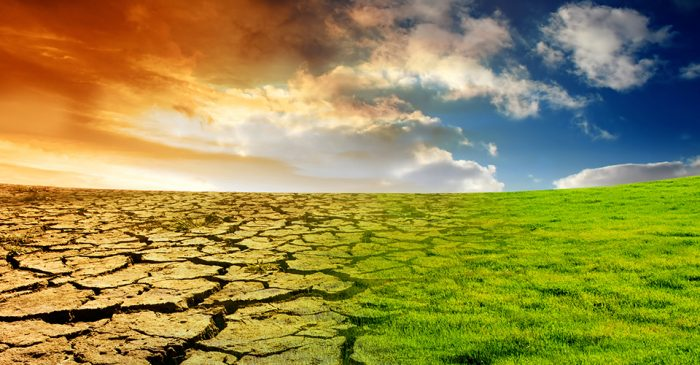
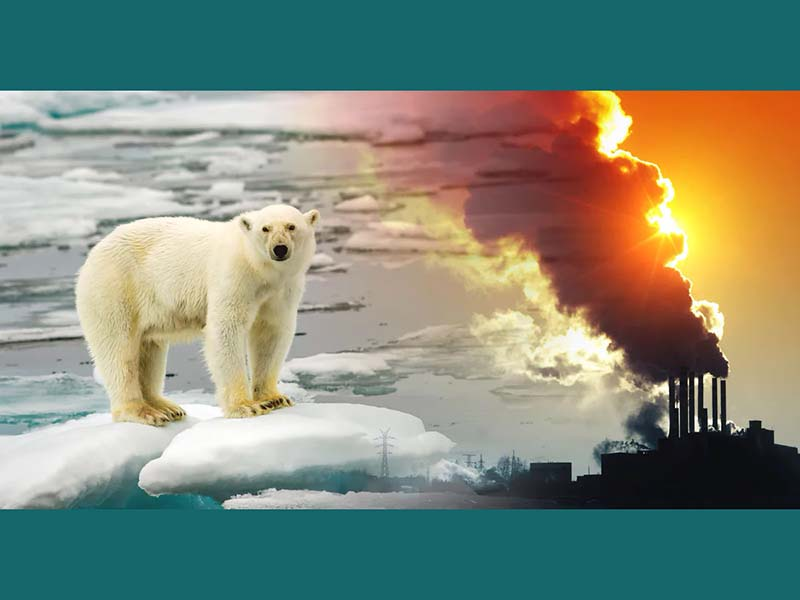

Nombre: GabrielAdairCollazoTorres
Grado: 4⁰
Grupo: B
Programación
El bullying es un problema serio que afecta a muchos estudiantes. Es importante estar informado y saber cómo prevenirlo.
El bullying puede ser físico, verbal, social o cibernético. Aquí hay algunas formas de prevenirlo:
Para más información y recursos, visita el siguiente enlace.
La Catedral de San Cristóbal de las Casas es un hermoso ejemplo de arquitectura colonial española.
Más informaciónEl Cerrito de San Cristóbal es un promontorio de poco más de 70 m de elevación y que cubre un poco más de 18 hectáreas de extensión dentro de la parte central del valle de San Cristóbal de Las Casas.
Más informaciónDescubiertas en 1947, estas grutas tienen una sola entrada, agujeros laterales con una longitud de 10.2 kilómetros y una profundidad de hasta 550 metros. El Parque Ecoturístico de Rancho Nuevo es un espacio natural situado a 15 kilómetros de la ciudad de San Cristóbal de Las Casas.
Más informaciónEl calentamiento global es uno de los mayores desafíos ambientales que enfrenta nuestro planeta. La actividad humana, como la quema de combustibles fósiles y la deforestación, ha aumentado la concentración de gases de efecto invernadero en la atmósfera, lo que provoca un aumento de la temperatura media global.
 Para combatir el calentamiento global, es fundamental reducir las emisiones de gases de efecto invernadero y promover prácticas sostenibles en todos los sectores. Algunas acciones que podemos tomar incluyen: